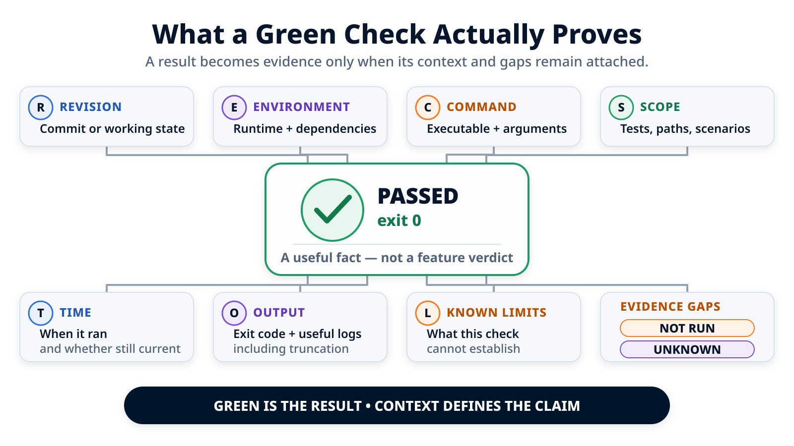

“The Tests Pass”: What Does the Workflow Prove?¶
A passing test result is a useful fact. It is not yet a conclusion about the feature. To understand what it proves, we need to know which command ran, what it covered, which revision it concerned, which environment it used, and everything it did not verify.
In the previous article, a teaching scenario involving URL synchronization helped us examine stopping and resuming work. To analyze evidence without mixing that scenario into the main execution, let us return to the original pagination feature described in the end-to-end trace, without the URL extension. Assume that its tasks are complete, the observed files remain within the authorized scope, and every command that ran returned 0.
Can we now write, “customer directory pagination has been validated”?
Not yet. We can make a more precise claim: in a given local context, certain commands completed without errors against the observed working-tree state. That sentence may sound less impressive. It is far more useful to the person reviewing the change.
A framework applying these principles can retain some of these facts: attempts, detected files, scope checks, executed commands, exit codes, and a review summary. That does not turn the local artifact it produces into a complete attestation for a pull request.
The color of a check summarizes a result. The evidence must make it possible to reconstruct that result's scope.

“Green” is not a property of the code¶
Saying that a test passes almost always omits the rest of the sentence: which test, run where, when, against what, and under which assumptions?
A validation result can be represented as a tuple:
result = (
revision or working state,
environment,
command,
covered scope,
timestamp,
exit code,
useful output,
known limitations
)
Removing one of these elements does not necessarily make the result false. It reduces what someone else can conclude from it.
A backend unit-test command returning 0 establishes that the cases present in that suite did not fail in that environment. It does not demonstrate that the interface can consume the new contract. A frontend type check does not demonstrate that the pagination controls behave correctly. A successful build does not demonstrate that the loading, empty, and error states are understandable to a user.
Even an end-to-end suite does not “prove the feature” in an absolute sense. It exercises the paths it contains, with the data and environment it is given. Its value may be high; its scope remains bounded.
The right question is therefore not:
Are the tests green?
But:
Which hypotheses does the green result rule out, and which ones remain open?
Four sources of truth to keep separate¶
An agentic execution can easily mix several categories of information. They must remain distinct during review.
| Source | Example | What we can claim | Main limitation |
|---|---|---|---|
| Agent declaration | “I added pagination and the tests pass” | The agent reports completion and describes its result | The declaration is not an independent check |
| Workflow observation | A command returned 0 between two timestamps |
The command completed successfully according to its exit code | By default, the workflow does not know whether the command is sufficient |
| Git-reported state | Paths are modified in the working tree | Git sees those differences at inspection time | Without identified base and head commits, attribution to a revision remains incomplete |
| Human decision | “These checks are sufficient to submit the change for merge” | An authorized person accepts the level of residual risk | The decision depends on the quality of the facts available to that person |
These four sources can agree without being interchangeable. The agent may report one modified file while the workflow observes a different list in Git. When they diverge, the difference itself becomes a fact to examine.
Likewise, a tool may record “completed” because every declared command succeeded. That status does not say whether an important validation was omitted. An absent command has no red exit code.
An omitted validation must never appear as a successful check. It must appear as missing information, an explicit choice, or a residual risk.
Inspecting local evidence¶
For the pagination example, imagine the following local artifact. Its field names and values were chosen for teaching purposes: they illustrate one way a framework can retain the facts that matter during review.
attempt:
id: run-002
created_at: 2026-07-17T09:42:18Z
agent:
declared_result: completed
summary: >-
Pagination contract added to the API and integrated into the directory.
git_observed:
before:
already_modified_files: []
after:
modified_files:
- backend/customers/api.py
- backend/customers/tests/test_pagination.py
- frontend/customers/customer-list.tsx
- frontend/customers/customer-list.test.tsx
changed_during_attempt:
- backend/customers/api.py
- backend/customers/tests/test_pagination.py
- frontend/customers/customer-list.tsx
- frontend/customers/customer-list.test.tsx
boundaries:
status: passed
violations: []
validations:
- command: backend-tests customers
exit_code: 0
started_at: 2026-07-17T09:43:02Z
ended_at: 2026-07-17T09:43:07Z
- command: frontend-tests customer-list
exit_code: 0
started_at: 2026-07-17T09:43:07Z
ended_at: 2026-07-17T09:43:13Z
global_quality:
status: not_run
The paths and commands are illustrative. The excerpt nevertheless raises concrete questions:
- were there truly no files modified before execution, or were they captured incorrectly?
- does the final list include staged, unstaged, and untracked changes?
- were the commands selected from the repository contract, from the plan, or by the agent?
- is their complete output retained elsewhere, or only an excerpt?
- why was the global quality check not run?
- which acceptance criterion does each command exercise?
- on which commit can this attempt be replayed?
Useful evidence does not make these questions disappear. It makes them visible early enough for review to address them.
What a framework can establish locally¶
To make local evidence inspectable, an implementation can:
- give each attempt an identifier, a timestamp, and a link to its detailed result;
- inspect Git state before and after the runner executes;
- calculate which files changed during execution, rather than automatically treating the entire working tree as the agent's work;
- compare observed paths with declared boundaries;
- run configured validations only after certain structural checks;
- retain each command's exit code, timestamps, and a portion of its standard output and error streams;
- keep earlier attempts when a correction and another validation pass are required;
- gather files, checks, risks, and open questions into a summary that prepares the review.
With these capabilities, the workflow can support a precise claim: a significant part of the local execution is inspectable.
This setup does not, however, establish that:
- the Git capture necessarily covers every possible state of the index and working tree;
- the initial state was clean or explicitly accepted;
- the artifact identifies immutable base and head commits;
- all system, runtime, dependency, and tool versions were recorded;
- the commands that ran cover every acceptance criterion;
- CI repeated the checks in an isolated environment;
- the retained output is exhaustive;
- the business behavior is correct.
These gaps do not invalidate local evidence. They simply prevent claims that exceed its actual scope.
A command is only meaningful with its scope¶
For pagination, validations can be classified by the question they answer.
| Check | Question actually tested | What it does not cover by itself |
|---|---|---|
| Backend unit tests | Do boundary calculations and metadata satisfy the coded cases? | Actual serialization, database behavior, consumers |
| API integration test | Does the route return the expected contract with test data? | Interface rendering and compatibility with every client |
| Frontend type check | Do the interface and its calls satisfy the types known at compile time? | Runtime behavior and visual quality |
| Component tests | Do the “previous” and “next” controls and the implemented states behave as expected in the test scenarios? | Complete navigation, real network behavior, exhaustive accessibility |
| End-to-end test | Does the tested user journey work in the test environment? | Cases absent from the scenario, load, production |
| Visual review | Do the main states appear correct with the observed data? | Automated regression detection and behaviors not exercised during review |
This table prevents two opposite mistakes. The first is mechanically requiring every possible validation. The second is treating a few green checks as implicit coverage of the entire feature.
The level of validation should remain proportional to the mode selected for the change. A full-stack Structured Feature requires a combination of checks across its surfaces and contracts. It does not necessarily require testing the entire monorepo on every local attempt. Any check not run must be deferred to an identified stage or explicitly accepted as a risk.
Connecting acceptance criteria to validations¶
The pagination brief can contain four observable criteria:
| Acceptance criterion | Planned validation | Result source | Remaining gap or human follow-up |
|---|---|---|---|
| The API returns the items, current page, and total result count | Unit tests and API integration test | Local workflow, then CI | Verify compatibility with existing consumers |
| The user can move forward and backward without going past the first or last page | Component tests and end-to-end journey | Local workflow or CI, depending on the environment | Verify keyboard behavior and focus |
The loading, empty, and error states remain distinct |
Component tests | Local workflow | Visual review with representative data |
| The directory loads the first page when opened | Targeted component test | Local workflow | Confirm the default value in the brief and contract |
This matrix does not guarantee that the tests are good. It reveals when a criterion has no validation, when a test claims to cover too much, or when a product decision is hiding inside a technical scenario.
It also reveals the role of manual review. “Manual review completed” is neither a weakness nor equivalent to passed. Proper evidence records who checked what, against which version, and with what result. If that information is unavailable, the status must remain “to do” or “unknown.”
Gaps must be data¶
A workflow interface is tempted to show only green and red. Evidence needs at least two additional states: not run and unknown.
- Not run means the check was identified but did not execute. The reason may be legitimate: unavailable environment, cost, a check deferred to CI, or a planned manual validation.
- Unknown means the information needed to reach a conclusion was not captured. Examples include the initial state of the index or the exact version of a tool.
- Truncated must be explicit when only part of the output is retained. The exit code remains available, but detailed analysis may require the complete artifact.
- Unstable means a check failed and then passed without a known cause. The latest green result does not erase the previous attempt.
An execution can therefore be acceptable overall while still containing gaps. The manifest is not meant to turn everything into a failure. It enables the reviewer to distinguish a known absence from an invisible omission.
From local evidence to revision-bound evidence¶
The end-to-end trace prepares the handoff to Git; it does not replace it. As long as the evidence describes a mutable working tree, another change can be added, removed, or staged after the evidence is produced.
To connect results to a proposed change, we must at least identify:
- the base commit from which the work started;
- the head commit containing exactly the reviewed change;
- the branch or pull request reference;
- the state of the working tree and index at the relevant time;
- the source of the result: local workstation, ephemeral environment, or CI;
- essential environment versions;
- the artifacts or logs that make the output retrievable.
Git then provides a content identity and a stable diff between two revisions. CI can run checks against the pull request head in an environment described by the pipeline. Neither decides whether the coverage is sufficient. Together, they make the connection between a revision and its results much stronger.
There is also a timing problem. If a fix is added after a green run, the previous validation does not automatically apply to the new commit. A review interface should make that mismatch visible rather than preserving a green badge detached from its revision.
The target manifest¶
The following example is a design target: one possible manifest for moving from inspectable local evidence to revision-bound provenance. It remains a proposed structure; every field should be populated from a real, verifiable observation if it is to support the associated conclusion.
evidence:
execution:
id: stable-run-id
attempt: 2
source: local # local | ci
started_at: 2026-07-17T09:42:18Z
ended_at: 2026-07-17T09:43:19Z
revision:
base_commit: abc123
head_commit: def456
branch: feature/customer-pagination
working_tree_clean_before: true
index_clean_before: true
changes:
observed_files: []
allowed_files: []
violations: []
environment:
system: linux
runtime: identified-version
dependencies: identified-lockfile
validations:
- id: backend-pagination
command: stable-repository-command
status: passed
exit_code: 0
validated_revision: def456
index_at_check: clean
working_tree_at_check: clean
criteria: [AC-1]
output: artifact://validation/backend-pagination
checks_not_run:
- id: end-to-end
reason: deferred_to_ci
risk: browser_integration_not_verified_locally
agent_declarations:
result: completed
human_review:
status: pending
residual_risks: []
A few details matter:
passed,not_run, andunknownare distinct;- the agent's declaration remains separate from workflow observations;
- the acceptance-criteria-to-validation matrix is readable without interpreting command names;
- the risk attached to a deferred validation does not disappear;
- human review remains
pendingeven when every command is green.
The manifest can be shorter for a local fix and richer for a Foundation Evolution effort. Its function does not change: expose provenance, scope, and gaps before the decision.
What CI adds—and what it does not¶
CI provides three important properties: execution tied to a revision, a more reproducible environment, and visibility shared across the team. It can also enforce a version matrix, retain artifacts, and block merges when certain checks fail.
It does not automatically correct a poor choice of validations. A pipeline can be perfectly green while ignoring an acceptance criterion. It can also succeed because a command has become too permissive or because a suite does not exercise the new behavior.
The local workflow and CI are therefore complementary:
local evidence
-> prepares review and detects problems early
-> is tied to a commit
-> CI repeats or completes the checks on that revision
-> the PR gathers the diff, results, decisions, and risks
-> a human accepts, requests another attempt, or rejects
The best handoff is not “everything was green on my machine.” It is an evidence manifest that says which checks can be replayed, which are reserved for CI, and which checks still require human judgment.
A review checklist that resists the green badge¶
Before accepting the sentence “the tests pass,” the reviewer can ask ten questions:
- Is the exact revision or working-tree state that was checked identifiable?
- Was the initial state clean, or are its pre-existing changes known?
- Are the commands that actually ran visible?
- Are their exit codes, timestamps, and useful outputs available?
- Does their scope match the modified surfaces?
- Does every acceptance criterion have a check or an explicit decision?
- Are unrun validations and unknown information visible?
- Was a red attempt, a retry, or an unstable result retained?
- Did CI check the commit currently under review?
- Who has the authority to accept the residual risk?
If the answers are accessible without reopening the conversation with the agent, the workflow has already become more valuable. If they are connected to the revision and CI artifacts, the pull request becomes substantially easier to challenge and approve.
Conclusion¶
“The tests pass” is neither useless nor sufficient. It is the beginning of a demonstration: one or more commands completed without error in a given context.
Local evidence makes that context inspectable. Git ties the change to revisions. CI replays or completes the checks on an identified head commit. The acceptance-criteria-to-validation matrix shows the expected coverage. Human review ultimately decides whether the facts and gaps are compatible with the risk.
A framework applying these principles can already make this first step substantially more useful. The target manifest shows how to connect it to a revision without presenting a design intention as an achieved guarantee.
One question remains: how many decisions can reasonably be stabilized in a brief before its gray areas become more expensive than writing a specification? That will be the subject of the next article: When the Brief Is Not Enough: Introducing a Spec Without Bureaucracy.